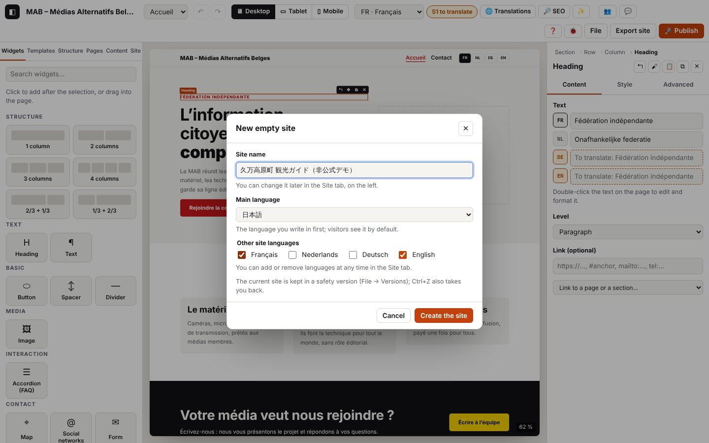

Getting started: the Kumakōgen tourism site in two pages

On this page
- Before you start
- Part A — Prepare the site
- Part B — Page 1 “ホーム”
- Part C — Page 2 “イベント・アクセス”
- Part D — Finishing touches, checking and publishing
- Step 22 — Upcoming events on the home page
- Step 23 — Reuse a block: component and window
- Step 24 — The site on a phone
- Step 25 — A shared style and a little movement
- Step 26 — Translate everything that's missing
- Step 27 — SEO (Google)
- Step 28 — AI on your computer (optional)
- Step 29 — Save a version
- Step 30 — Check, preview, export
- Step 31 — Publish to OVH
- Step 32 — The self-test
- Going further
- Summary: every widget, where and when
In this tutorial, you build a real little tourism site, step by step: the site of Kumakōgen (久万高原町), a mountain town in Ehime Prefecture, on the island of Shikoku, in Japan. The site has two pages and three languages (Japanese, English, French). By the end, you will have used every Atelier widget at least once, and almost all of its features: languages, colours, phone, events, SEO, versions, checking, publishing.
Allow two to three hours, in several sittings if you like: Atelier saves everything by itself.
Before you start
What you are going to build
- Page 1 “ホーム” (Home): a large welcome heading, key figures, three highlights, places to visit, the pilgrimage, the town's motto, the seasons in pictures, a video, the upcoming events.
- Page 2 “イベント・アクセス” (Events & access): the events calendar (upcoming and past), how to get there, contact details, a map, an FAQ, admission prices and a contact form.
- On every page: a header (logo, menu, language switcher) and a footer (credits, social networks).
The data is real. All the facts (figures, dates, addresses, phone numbers) come from the project's file of checked data (docs/exemple-kumakogen/donnees.md), cross-checked on 29 October 2026 with Kumakōgen Town, Ehime Prefecture, the Japan Meteorological Agency, Shikoku Tourism and JNTO. The texts are short rewordings, not copies.
This is an unofficial demo site. It does not replace the town's website (https://www.kumakogen.jp/). The tutorial says so in plain words in the footer: keep this notice if you publish the example. Do not use the official coat of arms or logo.
The images. No real photos are used (they belong to their authors). In the guided tour, Atelier draws simple illustrations. If you follow this tutorial by hand, import any image from your computer each time an image is needed; afterwards, replace them with your own photos.
The main language. In this site, Japanese is the main language: it is the language you fill in first, the one of the site's main address. You choose it when you create the site (step 1) and it cannot be changed afterwards.
In the text tables below, each text is given in all three languages: copy it into the JA, EN or FR line of the setting.
What you need: a computer with a screen at least 1024 pixels wide, and a recent browser. For the on-device AI (optional, step 28): a recent Chrome on a computer.
How to read each step: What you do (the clicks, with the real names of the buttons), What you see, Tip. The name of each widget links to its page in All widgets.
Part A — Prepare the site
Step 1 — Create the project
What you do
- Open the editor. At the top right: File menu → New empty site.
- In the window that opens:
- Site name:
久万高原町 観光ガイド（非公式デモ）; - Main language: 日本語;
- Other site languages: tick English and Français.
- Site name:
- Click Create the site.
What you see: an empty page in the centre (the canvas), the left panel (Widgets, Templates, Structure, Pages, Content, Site) and the inspector on the right. At the top right, “Saved”: every change is kept on your computer.
Tip: before replacing the project, Atelier kept a safety version of the old one (File → Versions…). And Ctrl+Z undoes the last action, at any time.
Step 2 — Check the languages
What you do
- Left panel, Site tab, Identity part → Languages.
- Check that 日本語 (marked “main”; it cannot be unticked), English and Français are ticked. You can add or remove a language here at any time.
What you see: at the top of the screen, the language list offers JA, EN and FR. It chooses the language shown and written in the canvas. The 🌐 Translations button (the table of all the translations) is available as soon as the site has two languages.
Tip: the language of the editor itself (its buttons) is a different setting: File → Interface language (français, English, 日本語). This tutorial assumes the editor is in English.
Step 3 — Create the two pages
What you do
- Pages tab. The home page already exists, with the JA title
ホーム: expand its entry and fill in Title: ENHome, FRAccueil. - At the top of the panel, in Title of the new page, type the title in the main language (
イベント・アクセス), then + Page. - In the new page's entry: Title EN
Events & access, FRAgenda & accès. - Address field: replace the suggested address with
agenda, then Enter. - Google description for each page (one sentence, 160 characters at most):
| Page | JA | EN | FR |
|---|---|---|---|
| ホーム | 愛媛県の中央、標高約800mの高原のまち・久万高原町の見どころと四季を紹介する非公式デモサイトです。 | Unofficial demo site: the sights and seasons of Kumakōgen, a highland town about 800 m up in central Ehime. | Site de démonstration non officiel : les sites et les saisons de Kumakōgen, commune de montagne au centre d'Ehime. |
| イベント・アクセス | 久万高原町の主なイベント、松山からの行き方、問い合わせ先、入館料をまとめました（非公式デモ）。 | Main events in Kumakōgen, how to get there from Matsuyama, contacts and admission prices (unofficial demo). | Les grands rendez-vous de Kumakōgen, l'accès depuis Matsuyama, les contacts et les tarifs (démonstration non officielle). |
What you see: the new page opens, empty; the message “Page “…” created: /…/”; the page selector at the top of the screen offers both pages. The home page always stays first in the menu.
Tip: a page address is written with Latin letters, numbers and hyphens: for a title in Japanese, Atelier suggests a readable address when it can (katakana are transcribed), otherwise a fallback address. Choosing agenda yourself gives a short, clear address. For the English or French address, the ⟲ button suggests an address based on the translated title.
Step 4 — Colours, fonts and logo
What you do
- Site tab, Palette part: click the Main swatch and choose a forest green (for example
#2f6b4f); Secondary: an ochre (for example#c8902e). You can rename a colour in the field next to it. - Look at the Contrast list just below: each pair must stay green ✓. A red pair ✗ means a text would be hard to read: make the colour darker or lighter.
- Typography part: Heading font:
Source Serif 4; Body font:System (no download). Corner rounding:12. - Default header part → Logo → Import an image: choose an illustration (a stylised mountain top, for example), never the official coat of arms.
What you see: the whole site changes colour in one go; the canvas reloads for the new font.
Tip: with an imported logo, 🎨 Palette from the logo (Palette part) suggests six colours taken from the logo, with contrast already corrected; nothing changes until Apply the palette. On the Japanese pages, Atelier automatically adds Japanese fallback fonts after the chosen font.
Step 5 — Header and footer in blocks
Widgets you'll meet: Site logo, Menu, Language switcher, Text, Social networks.
What you do
- Site tab → Header and footer part → next to “Header: default”, Customise with blocks.
- A banner says “You are editing the site header — every page”. The header contains three columns: Site logo, Menu, Language switcher. Click the Language switcher → inspector, Content tab → View: Names (Français…).
- Click the Site logo → Logo height:
40 px; keep Show the site name. - Finish in the banner.
- Do the same for the Footer: Customise with blocks. It contains a Site logo, a Text, a Menu (in a column) and Social networks.
- Double-click the footer Text and write the credits below (change the language at the top of the screen for each language, or fill in the three lines in the inspector).
- Click Social networks → Links: delete the three sample lines with ✕, then + Link → Network:
Website, Address:https://www.kumakogen.jp/(the town's official website). Finish.
| Footer text | |
|---|---|
| JA | 非公式のデモサイトです。データ：久万高原町、久万高原町観光協会、愛媛県、気象庁、四国ツーリズム創造機構、日本政府観光局（2026年10月29日確認）。イラストはオリジナルです。 |
| EN | Unofficial demo site. Data: Kumakōgen Town, Kumakōgen Tourism Association, Ehime Prefecture, Japan Meteorological Agency, Shikoku Tourism, JNTO (checked on 29 October 2026). Original illustrations. |
| FR | Site de démonstration non officiel. Données : commune de Kumakōgen, office de tourisme de Kumakōgen, préfecture d'Ehime, Agence météorologique du Japon, Shikoku Tourism, JNTO (vérifiées le 29/10/2026). Illustrations originales. |
What you see: the menu already shows both pages; the language switcher shows “日本語 · English · Français”. While you edit, the rest of the page is greyed out.
Tip: double-clicking the header or footer in the page takes you back to editing them. Back to default cancels the block version. Do not add the tourism association's website (kuma-kanko.com): it has been temporarily closed since 28/10/2026.
Part B — Page 1 “ホーム”
Choose the ホーム page in the selector at the top of the screen (or Ctrl+K, “Page: ホーム”).
Step 6 — The welcome section
Widgets you'll meet: Section, Row, Column, Heading, Text, Button, Image.
What you do
- Templates tab → Section templates → Hero (“Large heading, text, two buttons and an image”).
- Click the small line above the title, at the top left, then double-click it to write in it (table below). Do the same for the main heading, the text and the two buttons. A heading or a button is finished with Enter; a text with Esc.
- Select the first button → Link → Link to a page or a section… list →
イベント・アクセス (/agenda/). Do the same for the second button. - Click the image area on the right → Image: Import an image → Description (for screen readers and Google) (table).
- Press Esc several times: the selection moves up from the widget to its column, to the row, then to the section. Look at the top of the inspector: the path “Section › Row › Column › …”.
| Element | JA | EN | FR |
|---|---|---|---|
| Small line above the title (Heading, level “Paragraph”) | 四国の軽井沢 | The Karuizawa of Shikoku | Le « Karuizawa de Shikoku » |
| Main heading (H1) | 久万高原町へようこそ | Welcome to Kumakōgen | Bienvenue à Kumakōgen |
| Text | 愛媛県のほぼ中央、標高およそ800mの高原のまち。夏は涼しく、冬は雪に包まれます。 | A highland town in the heart of Ehime, about 800 m above sea level, with cool summers and snowy winters. | Une commune de montagne au centre de la préfecture d'Ehime, à environ 800 m d'altitude, aux étés frais et aux hivers enneigés. |
| Button 1 | イベントを見る | See the events | Voir l'agenda |
| Button 2 | アクセス | Getting here | Venir à Kumakōgen |
| Image description | 高原の風景のイラスト | Illustration of a highland landscape | Illustration d'un paysage de montagne |
What you see: a section in two columns, text on the left, image on the right; in the page, the selected widget carries the ↰ ✥ ⧉ ✕ bar.
Tip: the templates' sample texts are in French. If Japanese is your main language, the JA line may be empty at first (the page looks empty in Japanese): fill it in, then the others. Only one H1 per page: it is the main heading.
Step 7 — Write in another language
What you do
- At the top of the screen, choose EN · English in the language list.
- Double-click the main heading: you are now writing the English version. Do the same in FR.
- Go back to JA.
What you see: the canvas reloads in the chosen language; in the inspector, the line of the language shown is highlighted; an untranslated line is tinted and shows “To translate: …”.
Tip: at the top, an “N to translate” badge counts what is missing. No need to translate everything as you go: step 26 shows the table that brings it all together.
Step 8 — The key figures
Widget you'll meet: Key figures.
What you do
- Select the welcome section, then Templates → Key figures: the section is added just after it.
- Click the figures → inspector, Figures: replace the three lines and add the fourth with + Figure.
| Value (the same in all three languages) | Caption JA | Caption EN | Caption FR |
|---|---|---|---|
| 584 km² | 愛媛県でいちばん広い町 | the largest municipality in Ehime | la plus grande commune d'Ehime |
| ≈ 800 m | 平均標高 | average altitude | altitude moyenne |
| 12.8 °C | 年平均気温（松山は16.8 °C） | average yearly temperature (Matsuyama: 16.8 °C) | température moyenne annuelle (Matsuyama : 16,8 °C) |
| 1982 m | 石鎚山・西日本最高峰 | Mt Ishizuchi, highest peak in western Japan | mont Ishizuchi, plus haut sommet de l'ouest du Japon |
What you see: a band in the main colour with four large figures; on a phone, they will stack one below the other.
Tip: the value is not translated: write it in a way that reads well in all three languages (12.8 °C rather than 12,8 °C). Sources: Kumakōgen Town (area, altitude), Japan Meteorological Agency, 1991–2020 normals (temperatures), Saijō City (Ishizuchi).
Step 9 — Three ways to discover Kumakōgen
Widget you'll meet: Icon box.
What you do
- Templates → Features (“Heading and three icon boxes”).
- Write the heading and the introduction sentence, then, for each box: Icon, Title, Text.
| Element | JA | EN | FR |
|---|---|---|---|
| Heading | 久万高原町の楽しみ方 | Three ways to enjoy Kumakōgen | Trois façons de découvrir Kumakōgen |
| Introduction | 大自然、お遍路、そして星空。 | Nature, pilgrimage and starry skies. | Nature, pèlerinage et ciel étoilé. |
| Box 1 — icon Globe | 大自然 / 四国カルストの高原と、エメラルド色の面河渓。 | Nature / The Shikoku Karst plateau and the emerald Omogo Gorge. | Nature / Le plateau du Shikoku Karst et les gorges émeraude d'Omogo. |
| Box 2 — icon Place | お遍路 / 四国八十八ヶ所の第44番・第45番札所があります。 | Pilgrimage / Temples 44 and 45 of the Shikoku 88-temple pilgrimage. | Pèlerinage / Les temples 44 et 45 du pèlerinage des 88 temples de Shikoku. |
| Box 3 — icon Star | 星空 / 口径60cmの望遠鏡を備えた天体観測館。 | Starry skies / An observatory with a 60 cm telescope. | Ciel étoilé / Un observatoire équipé d'un télescope de 60 cm. |
(In each “Box” cell, the part before the “/” is the Title, the part after it is the Text.)
What you see: a row of three boxes under a centred heading. This section has two rows: one for the heading, one for the boxes.
Tip: the box's Layout: Icon above, Icon on the left or Centred.
Step 10 — The places to visit
Widget you'll meet: Content card.
What you do
- Templates → News (“Three cards with image, text and link”).
- Section heading: JA
おすすめスポット, ENPlaces to visit, FRSites à visiter. - For each card: Image (import an illustration), Image description, Title, Text. Empty the Link text: with no link, the “… →” line disappears.
| Card | JA | EN | FR |
|---|---|---|---|
| 1. Title | 四国カルスト | Shikoku Karst | Shikoku Karst |
| 1. Text | 標高1,000〜1,500mに広がるカルスト台地。牛の放牧と大パノラマが楽しめます。冬は道路が閉鎖されます。 | A limestone plateau 1,000 to 1,500 m up, with grazing cattle and sweeping views. The road closes in winter. | Un plateau calcaire entre 1 000 et 1 500 m d'altitude, avec des vaches en pâture et une vue immense. Route fermée en hiver. |
| 2. Title | 面河渓 | Omogo Gorge | Gorges d'Omogo |
| 2. Text | エメラルドグリーンの清流と奇岩が続く渓谷。秋の紅葉は四国屈指の美しさです。 | An emerald-water gorge with easy riverside trails, famous for its autumn colours. | Une gorge aux eaux émeraude, avec des sentiers faciles et l'un des plus beaux feuillages d'automne de Shikoku. |
| 3. Title | 古岩屋 | Furuiwaya | Furuiwaya |
| 3. Text | 円錐形の礫岩峰が林立する国の名勝。紅葉の季節が特に見事です。 | A cluster of striking conglomerate rock spires, explored on a short loop trail. | Une forêt de pitons rocheux étonnants, à parcourir en une courte boucle. |
What you see: three thumbnails side by side; a grey “Image” box as long as no image has been chosen.
Tip: for a list that updates by itself (events), the content card is not enough: that is the job of the Content list (step 17).
Step 11 — The pilgrimage
Widgets you'll meet: Icon list, Image.
What you do
- Templates → Text and image (“Paragraph on the left, image on the right”).
- The heading, then the text: double-click in it, replace the first paragraph and delete the second.
- Click the Icon list → Items: for each line, Icon and Text.
- Image on the right: import an illustration (a temple among cedars), Description: JA
杉木立の中の寺のイラスト, ENIllustration of a temple among cedars, FRIllustration d'un temple dans les cèdres.
| Element | JA | EN | FR |
|---|---|---|---|
| Heading | お遍路の道 | On the pilgrims' path | Sur le chemin des pèlerins |
| Text | 四国八十八ヶ所霊場のうち、第44番大宝寺と第45番岩屋寺が町内にあります。両寺の間は歩いて約9km、約3時間30分です。 | Two temples of the Shikoku 88-temple pilgrimage are in Kumakōgen: Daihō-ji (no. 44) and Iwaya-ji (no. 45). They are about 9 km apart on foot, around 3 h 30. | Deux temples du pèlerinage des 88 temples de Shikoku sont à Kumakōgen : le Daihō-ji (n° 44) et l'Iwaya-ji (n° 45). Ils sont à environ 9 km l'un de l'autre à pied, soit environ 3 h 30. |
| Line 1 — icon Place | 第44番 大宝寺：701年創建と伝わる「中札所」 | No. 44 Daihō-ji: founded in 701, the "middle temple" of the pilgrimage | N° 44 Daihō-ji : fondé en 701, le « temple du milieu » du pèlerinage |
| Line 2 — icon Place | 第45番 岩屋寺：巨大な岩壁に抱かれた札所（石段は約266段） | No. 45 Iwaya-ji: built against a huge rock face (about 266 steps) | N° 45 Iwaya-ji : adossé à une immense falaise (environ 266 marches) |
| Line 3 — icon Clock | 44番から45番まで徒歩約3時間30分 | From no. 44 to no. 45: about 3 h 30 on foot | Du n° 44 au n° 45 : environ 3 h 30 à pied |
What you see: text and list on the left, image on the right; the icons take the main colour.
Tip: + Element adds a line; ↑ ↓ change the order; ✕ deletes.
Step 12 — The town's motto
Widget you'll meet: Quote.
What you do
- Select the pilgrimage Icon list (the quote will come just after it, in the same column).
- Widgets tab → Content family → Quote.
- Quote, Author:
久万高原町, Role or outlet, Appearance: Large quote.
| Element | JA | EN | FR |
|---|---|---|---|
| Quote | ひと・里・森がふれあい ともに輝く 元気なまち | A lively town where people, villages and forests meet and shine together | Une commune vivante où les gens, les villages et la forêt se rencontrent et brillent ensemble |
| Role or outlet | まちの将来像（町の公式サイトより） | The town's vision for the future (official website; our translation) | La vision d'avenir de la commune (site officiel ; notre traduction) |
What you see: the sentence in large type, with a coloured quotation mark.
Tip: a quote must be real: here, it is the official motto published by the town. Never put words in someone's mouth that they did not say.
Step 13 — The seasons in pictures
Widgets you'll meet: Spacer, Gallery.
What you do
- Select the pilgrimage section, then Templates → Gallery.
- Heading: JA
四季の久万高原, ENKumakōgen through the seasons, FRKumakōgen au fil des saisons. - Click the gallery → Images: three boxes exist; add the fourth with + Image. For each one: Image, Description, Caption (the same text for both, see the table). Columns (desktop):
4; keep Enlarge on click. - Select the gallery heading, then Widgets → Basic family → Spacer: it goes under the heading. Height:
32 px. Advanced tab → Hide on: tick Mobile.
| Image | JA | EN | FR |
|---|---|---|---|
| 1 | 春〜秋：四国カルストの放牧 | Spring to autumn: cattle grazing on the Shikoku Karst | Du printemps à l'automne : vaches sur le Shikoku Karst |
| 2 | 夏：天体観測館で星空観察 | Summer: stargazing at the observatory | Été : les étoiles à l'observatoire |
| 3 | 秋：面河渓の紅葉 | Autumn: autumn colours in the Omogo Gorge | Automne : feuillages des gorges d'Omogo |
| 4 | 冬：久万スキーランド | Winter: Kuma Ski Land | Hiver : Kuma Ski Land |
What you see: four thumbnails in one line. In the editor, the spacer hidden on mobile stays visible but see-through (so that you can still select it).
Tip: on the published site, a click enlarges the image; Esc closes it again. On a phone, the gallery switches to two images per line.
Step 14 — A video
Widget you'll meet: Video.
What you do
- Templates → Video (“Centred heading and video”).
- Heading: JA
動画で見る久万高原町, ENKumakōgen on video, FRKumakōgen en vidéo. - Click the video → YouTube or Vimeo address: [Kumakōgen data to complete: the address of a video published by the town or the tourism association]. Title (read by screen readers): the title of that video. Preview image (optional): an illustration.
What you see: an image with a ▶ button. As long as there is no address, the canvas shows “Paste a YouTube or Vimeo address in the inspector”.
Tip: on the published site, nothing is loaded from YouTube until the visitor clicks. If you do not have an official video, delete this section before publishing: the check before export reports a video with no address.
Part C — Page 2 “イベント・アクセス”
Open the イベント・アクセス page (selector at the top, or Ctrl+K, “Page: イベント・アクセス”).
Step 15 — Heading and introduction
Widgets you'll meet: Section, Heading, Text.
What you do
- Widgets tab → at the very top, Structure family → 1 column: an empty section is added.
- Text family → Heading; in the inspector, Level: H1 – page title. Then Text.
| Element | JA | EN | FR |
|---|---|---|---|
| Heading (H1) | イベントとアクセス | Events and getting here | Agenda et accès |
| Text | 久万高原町の主なイベントと、松山からの行き方をまとめました。日程は年によって変わることがあります。お出かけ前に公式情報をご確認ください。 | The main events in Kumakōgen and how to get here from Matsuyama. Dates can change from year to year: please check official information before you go. | Les grands rendez-vous de Kumakōgen et l'accès depuis Matsuyama. Les dates peuvent changer d'une année à l'autre : vérifie les informations officielles avant de partir. |
What you see: a widget added with a click goes just after the selected widget; if a section is selected, it goes into its first column; with nothing selected, Atelier creates a new section at the end of the page.
Tip: you can also drag a widget from the panel to the place you want: a blue line shows where it will land.
Step 16 — Create the events calendar
What you do
- Content tab → + New collection.
- Collection type: 📅 Events. In Collection name, replace the suggested name with
Agenda(its address then becomesagenda, like page 2). Untick “Also create the list page (added to the menu)” (page 2 will play that role) and “Add a few examples to replace”. Create collection. - In the Content panel, click Agenda: the collection window opens (Items, Fields, Settings tabs).
- Settings tab: check that the address of the item pages is
agendaand that List page (“back” link) shows the イベント・アクセス page (“Automatic”, because it has the same address; otherwise, choose it in the list). - Items tab → + Add for each event in the table. Fill in the fields, change the Item address (above the form), then switch the item's Status from ○ Draft (never published) to ● Published.
| Event | Title (JA / EN / FR) | Date, time | Place · Address | Description (JA / EN / FR) |
|---|---|---|---|---|
Address oyamabiraki | 石鎚山お山開き / Mt Ishizuchi season opening (O-yamabiraki) / Ouverture de la saison du mont Ishizuchi | Date 2027-07-01, End date 2027-07-10 | 石鎚神社 土小屋遥拝殿 (Tsuchigoya) · empty | 毎年7月1日〜10日。期間中、石鎚スカイラインは午前4時から通行できます。 / Every year from 1 to 10 July. During the festival, the Ishizuchi Skyline road opens at 4 am. / Chaque année du 1er au 10 juillet. Pendant la fête, la route Ishizuchi Skyline ouvre dès 4 h. |
Address joya-no-kane | 大宝寺の除夜の鐘 / New Year's Eve bell at Daihō-ji / Cloche du Nouvel An au Daihō-ji | Date 2026-12-31, Start time 23:45 | 大宝寺 Daihō-ji (n° 44) · 愛媛県上浮穴郡久万高原町菅生2-1173-2 | どなたでも並んで鐘をつくことができます（無料）。 / Everyone can queue to ring the bell, free of charge. / Chacun peut faire la queue pour sonner la cloche, gratuitement. |
Address kumabi-messe-2026 | 久万美メッセ2026「流動」 / Kumabi Messe 2026 exhibition / Exposition Kumabi Messe 2026 | Date 2026-04-26, End date 2026-09-03 | 町立久万美術館 Kuma Art Museum · 愛媛県上浮穴郡久万高原町菅生2番耕地1442-7 | 町立久万美術館の展覧会。2026年のテーマは「流動」。 / An exhibition at the Kuma Art Museum; the 2026 theme is "Ryūdō". / Une exposition du musée d'art Kuma ; thème 2026 : « Ryūdō ». |
Address kuma-ski-land-2025 | 久万スキーランド 2025-26シーズン / Kuma Ski Land, 2025-26 season / Kuma Ski Land, saison 2025-2026 | Date 2025-12-08, End date 2026-03-08 | 久万スキーランド Kuma Ski Land · 愛媛県上浮穴郡久万高原町東明神 | 標高900〜1,003mのゲレンデ。ナイターは22時まで。 / Slopes from 900 to 1,003 m; night skiing until 10 pm. / Pistes de 900 à 1 003 m ; ski de nuit jusqu'à 22 h. |
For the exhibition, Registration or tickets: https://www.kumakogen.jp/site/muse/26148.html (the museum's official page). Leave Status on “Scheduled” for all of them.
What you see: the list of items, with their dates; a draft item is marked as such and will not appear anywhere on the site.
Tip: Place and Address are not translated: write them once, in Japanese followed by the name in Latin letters. Dates are written YYYY-MM-DD. The Ishizuchi festival comes back every year on the same dates; the other two events are already over: they will be used for the “Past” list. The dates of the 2026-2027 ski season are announced in November: add them when they are published. For lots of items, ⇧ Import a CSV takes them from a spreadsheet.
Step 17 — Show the events
Widgets you'll meet: Content list, Divider.
What you do
- Select the introduction text. Widgets → Heading: JA
これからのイベント, ENUpcoming events, FRProchains événements. - Collections family → Content list. Inspector: Collection:
Agenda (4); Layout: Card grid; Columns (desktop):2; Events: Upcoming; Text when the list is empty: JA現在予定されているイベントはありません。, ENNo upcoming events for now., FRAucun événement à venir pour l'instant. - Basic family → Divider: Line: Dotted, Length:
50 %. - A Heading: JA
これまでのイベント, ENPast events, FRÉvénements passés; then a second Content list: same collection, Events: Past, Direction: Descending (Z→A, newest first).
What you see: two “upcoming” cards (the Ishizuchi season opening and the New Year's Eve bell), a line, then two “past” cards. Each card shows the image, the date, the title, the place and a link to the event's page.
Tip: on the published site, what counts is the visitor's date: on 1 January 2027, the New Year's Eve bell will move to “Past” by itself, without publishing again. The box at the top of the inspector offers Manage items, ✎ Card and ✎ Detail page.
Step 18 — Design an event's card and its page
Widget you'll meet: Field.
What you do
- Double-click one of the lists (or ✎ Card in the inspector). The banner says “You are editing the card of “Agenda” — every list in this collection will update”.
- In the banner's Preview: … list, choose
大宝寺の除夜の鐘: the card is shown with its real values. - Select the place Field (place icon), then Widgets → Collections family → Field: it goes just below. Field shown:
Address; Label before the value (optional): JA住所：, ENAddress:, FRAdresse :; Icon: None. - Finish. Then, in a list's inspector, ✎ Detail page: this is the page of each event (title, date and time, place, address, image, description, “Add to my calendar” button). Look at it with several preview items, then Finish.
What you see: the address appears on every card of the events calendar, in both lists, with each event's own value; if an event has no address, nothing is shown.
Tip: the date is written in the language of the page (in Japanese: “2026年12月31日…”); Date format chooses the long, short or full form. On the published site, the “Add to my calendar” button gives a file that the visitor's phone adds to its calendar.
Step 19 — Getting here and contact
Widgets you'll meet: Icon list, Map, Social networks, Form, Text.
What you do
- Select the events section, then Templates → Contact (“Contact details, map and form”).
- Select the section → Advanced tab → Anchor (for a #anchor link): replace
contactwithacces. - Left-hand heading: JA
アクセス・お問い合わせ, ENGetting here & contacts, FRAccès et contacts. Under the heading, add a Text (table). - Icon list: replace the three lines with the ones in the table (icon Phone for the first three, Place for the last one). For a number, double-click the line, select the number, 🔗 and type
tel:0892211111(for example): on a phone, one tap will start the call. - Map: Address:
愛媛県上浮穴郡久万高原町入野1855-6; Zoom (3 to 20):15; Height:320 px. - The template also contains Social networks: they are already in the footer, so delete these ones (✕).
- Form (on the right): Address that receives the messages: your own email address (this is a demo site: do not put a Town Office address there); translate Message subject, the labels of the Fields (お名前 / Name / Nom ; メールアドレス / Email / E-mail ; メッセージ / Message / Message), Button text (送信 / Send / Envoyer) and Privacy notice (optional).
| Element | JA | EN | FR |
|---|---|---|---|
| Access text | 松山から国道33号（三坂峠経由）で約34km、松山ICから町の中心部まで車で約30分です。町内に鉄道の駅はありません。JR松山駅からJR四国バスで約1時間〜1時間10分です。 | About 34 km from Matsuyama on Route 33 (via the Mikasa Pass), around 30 minutes by car from Matsuyama IC to the town centre. There is no railway station in the town: the JR Shikoku bus from JR Matsuyama Station takes about 1 h to 1 h 10. | Environ 34 km depuis Matsuyama par la route nationale 33 (col de Mikasa), soit environ 30 minutes en voiture de l'échangeur Matsuyama IC au centre. Il n'y a pas de gare dans la commune : le bus JR Shikoku met environ 1 h à 1 h 10 depuis la gare JR de Matsuyama. |
| Line 1 | 久万高原町役場 0892-21-1111 | Kumakōgen Town Office: +81 892-21-1111 | Mairie de Kumakōgen : +81 892-21-1111 |
| Line 2 | 観光振興係 0892-21-1116 | Tourism section of the Town Office: +81 892-21-1116 | Service du tourisme de la mairie : +81 892-21-1116 |
| Line 3 | 久万高原町観光協会 0892-21-1192 | Kumakōgen Tourism Association: +81 892-21-1192 | Office de tourisme de Kumakōgen : +81 892-21-1192 |
| Line 4 | 道の駅 天空の郷さんさん（観光案内 9:00〜17:00）〒791-1202 久万高原町入野1855-6 | Roadside station Tenkū no Sato Sansan (tourist information, 9 am–5 pm) | Aire routière Tenkū no Sato Sansan (information touristique, 9 h–17 h) |
| Message subject | サイトからのお問い合わせ | Message from the website | Message depuis le site |
| Privacy notice | いただいた情報は返信のためだけに使います。 | Your details are only used to reply to you. | Vos données servent uniquement à vous répondre. |
Under the list, add a small Text: JA 公開情報（2026年10月29日確認）, EN Public information, checked on 29 October 2026, FR Données publiques, vérifiées le 29/10/2026.
What you see: on the left the contact details and the map, on the right the form. With no receiving address, the form shows “⚠ Enter the address that receives the messages in the inspector.”
Tip: the map only loads Google Maps when the visitor clicks; an OpenStreetMap link is offered next to it. Never make up an official email address: the only public address found belongs to a person, so do not use it.
Step 20 — Frequently asked questions
Widget you'll meet: Accordion (FAQ).
What you do
- Templates → FAQ (“Heading and accordion”): a section with a centred heading and accordion.
- Heading: JA
よくある質問, ENFrequently asked questions, FRQuestions fréquentes. - Accordion → Questions: replace the two sample questions and add the other two with + Question. Keep First answer open and Mark as FAQ for Google (structured data).
| JA | EN | FR | |
|---|---|---|---|
| Q1 | 松山からどうやって行けますか？ | How do I get there from Matsuyama? | Comment venir depuis Matsuyama ? |
| A1 | 車なら国道33号で約34km、松山ICから町の中心部まで約30分です。バスはJR松山駅からJR四国バスで約1時間〜1時間10分。本数が少ないので、JR四国バスと伊予鉄南予バスの時刻表をご確認ください。 | By car, about 34 km on Route 33, around 30 minutes from Matsuyama IC to the town centre. By bus, the JR Shikoku bus from JR Matsuyama Station takes about 1 h to 1 h 10. Buses are infrequent: check the JR Shikoku Bus and Iyotetsu Nanyo Bus timetables. | En voiture, environ 34 km par la route 33, soit environ 30 minutes de Matsuyama IC au centre. En bus, le bus JR Shikoku met environ 1 h à 1 h 10 depuis la gare JR de Matsuyama. Les bus sont rares : consulte les horaires de JR Shikoku Bus et d'Iyotetsu Nanyo Bus. |
| Q2 | 町内に駅はありますか？ | Is there a train station? | Y a-t-il une gare ? |
| A2 | 町内に鉄道の駅はありません。JR四国バスで「久万中学校前」または「久万高原」まで行き、伊予鉄南予バスや町営バスに乗り換えます。 | No, there is no railway station in the town. Take the JR Shikoku bus to "Kuma Chūgakkō-mae" or "Kumakōgen", then change to Iyotetsu Nanyo buses or town buses. | Non, la commune n'a pas de gare. Le bus JR Shikoku va jusqu'aux arrêts « Kuma Chūgakkō-mae » ou « Kumakōgen » ; on continue avec les bus Iyotetsu Nanyo ou les bus municipaux. |
| Q3 | おすすめの季節は？ | When is the best time to visit? | Quelle est la meilleure saison ? |
| A3 | 夏は涼しく（8月の平均気温は24.5 °C、松山は28.1 °C）、星空も楽しめます。秋（10月〜11月中旬）は紅葉の季節です。石鎚スカイラインは4月〜11月に通行でき、12月〜3月は閉鎖されます。冬は雪が多く、スキーが楽しめます。 | Summer is cool (24.5 °C on average in August, against 28.1 °C in Matsuyama) and great for stargazing. Autumn (October to mid-November) brings the autumn colours. The Ishizuchi Skyline road is open from April to November and closed from December to March. Winter is snowy, with skiing. | L'été est frais (24,5 °C en moyenne en août, contre 28,1 °C à Matsuyama) et idéal pour les étoiles. L'automne (octobre à mi-novembre) est la saison des feuillages. La route Ishizuchi Skyline est ouverte d'avril à novembre et fermée de décembre à mars. L'hiver est enneigé : on y skie. |
| Q4 | どこに泊まれますか？ | Where can I stay? | Où dormir ? |
| A4 | 天体観測館のとなりの「久万高原ふるさと旅行村」に、通年のコテージ・バンガローと、4月〜11月末のキャンプ場があります（0892-41-0711）。ほかの宿は観光協会（0892-21-1192）へお問い合わせください。 | Kumakōgen Furusato Ryokō-mura, next to the observatory, has cabins and bungalows all year and a campsite from April to the end of November (+81 892-41-0711). For other places to stay, contact the Tourism Association (+81 892-21-1192). | Le village de vacances Kumakōgen Furusato Ryokō-mura, à côté de l'observatoire, propose des chalets et bungalows toute l'année et un camping d'avril à fin novembre (+81 892-41-0711). Pour les autres hébergements, contacte l'office de tourisme (+81 892-21-1192). |
What you see: the questions, with the first one open; a click opens or closes an answer.
Tip: an answer can contain bold text or a link (double-click in the page). The “Mark as FAQ for Google” option adds to the published site a description that Google can read.
Step 21 — Admission prices
Widget you'll meet: Pricing.
What you do
- Templates → Pricing (“Three plans, the middle one highlighted”).
- Heading: JA
入館料（大人）, ENAdmission (adults), FRTarifs d'entrée (adultes); introduction: JA2026年10月29日時点の情報です。最新の料金は各施設にご確認ください。, ENInformation checked on 29 October 2026: please check prices with each venue., FRInformations vérifiées le 29/10/2026 : vérifie les tarifs auprès de chaque lieu. - For each Pricing widget: Plan, Price (e.g. €49), Period (e.g. per month), What is included (bulleted list) (one line per bullet), Button text and Button link. The middle one keeps Highlight and gets a Badge.
| 1 | 2 (highlighted) | 3 | |
|---|---|---|---|
| Plan | 町立久万美術館 / Kuma Art Museum / Musée d'art Kuma | 天体観測館 / Astronomical Observatory / Observatoire astronomique | 上黒岩考古館 / Kamikuroiwa site museum / Musée du site de Kamikuroiwa |
| Price | ¥500 | ¥500 | ¥100 |
| Period | 大人（2026年の展覧会）/ adults (2026 exhibition) / adulte (exposition 2026) | 大人 / adults / adulte | 大人 / adults / adulte |
| Included | 9:30〜17:00（入館は16:30まで）・月曜休館 / 9:30 am–5 pm (last entry 4:30 pm) · closed on Mondays / 9 h 30–17 h (dernière entrée 16 h 30) · fermé le lundi | 観望会：金・土 19:00〜22:00（予約制）・口径60cmの反射望遠鏡 / Night viewing: Fri & Sat 7–10 pm (booking required) · 60 cm reflecting telescope / Observation : vendredi et samedi 19 h–22 h, sur réservation · télescope à miroir de 60 cm | 4月〜11月 9:00〜17:00・月曜休館・縄文時代の岩陰遺跡 / April–November, 9 am–5 pm · closed on Mondays · Jōmon-period rock shelter / Avril à novembre, 9 h–17 h · fermé le lundi · abri sous roche de la période Jōmon |
| Button | 公式ページ / Official page / Page officielle → https://www.kumakogen.jp/site/muse/ | (empty: no button) | (empty: no button) |
| Badge | (empty) | 夏は天の川 / Milky Way in summer / Voie lactée en été | (empty) |
(In the cells with three languages, the order is JA / EN / FR; the “·” sign separates two bullets.)
What you see: three columns; the middle one has a coloured border and the badge above it.
Tip: the price is not translated: ¥500 reads the same in all three languages. An empty button text removes the button.
Part D — Finishing touches, checking and publishing
Step 22 — Upcoming events on the home page
Widget you'll meet: Content list (second use).
What you do
- Ctrl+K, type “page ホーム”, Enter.
- Select the seasons section. Widgets → Structure → 1 column.
- Heading: JA
これからのイベント, ENUpcoming events, FRProchains événements; then Content list: CollectionAgenda, Events: Upcoming, Maximum number (0 = all):3, Link below the list (e.g. See all events): JAイベント一覧へ, ENAll events, FRTout l'agenda; Address of the link below the list: choose the イベント・アクセス page in the Link to a page or a section… list.
What you see: the upcoming events, and a button that leads to page 2. The card is the same as on page 2: you designed it only once.
Tip: Ctrl+K finds everything: a page (“Page: …”), a widget to add (“Add: …”), a template, a style setting, an element of the page (type a word from its text).
Step 23 — Reuse a block: component and window
What you do
- イベント・アクセス page: right-click the contact details Icon list → Create a component… → name:
Coordonnées. - ホーム page: select the second button of the welcome section (アクセス) → Link → Link to a page or a section… list → Open in a window (popup) group →
▣ Coordonnées. - To change the contact details later: double-click the component (or Edit component), make your changes, Finish: it changes everywhere it is used.
What you see: component instances have a dotted purple outline. On the published site, the アクセス button opens a small window with the contact details; its cross (or Esc) closes it.
Tip: Templates tab → My components: click a component to insert it on another page. Detach turns it into an independent copy.
Step 24 — The site on a phone
What you do
- At the top of the screen, the Mobile button (▯): the page is shown at the width of a phone.
- Scroll down: the columns now sit one below the other; the menu has folded away behind the “☰ メニュー” button.
- Select the main heading of the welcome section → Style tab → the tab's Mobile button → Typography group → Size → Scale… list: Heading 2. This setting only applies to mobile.
- The Style tab's 🖥▭▯ button: the three devices side by side, to compare them.
- Go back to Desktop (🖥); have a look at Tablet (▭) too.
What you see: on mobile, the spacer from step 13 has disappeared; the heading is smaller. A setting made on desktop applies everywhere, unless you change it for tablet or mobile.
Tip: to make a row keep its columns side by side even on a phone, select the row → Stack columns: Never. ↺ next to a setting goes back to the inherited value.
Step 25 — A shared style and a little movement
What you do
- Select the first button of the welcome section → Style tab → + Preset → name
Bouton principal→ Create. Tick Default for “Button” elements: every new button will get it. - Select the first card of the places to visit → Style tab → Effects group → Reveal on scroll:
up. Do the same for the other two cards (or Copy the style, then Paste it on the others). - On one card: Hover button → Transform: Lift; go back to Normal → Transition duration (ms):
200.
What you see: in the canvas, the card lifts when the mouse goes over it. The reveal can be seen on the published site, as you scroll.
Tip: a visitor who has asked their device for fewer animations does not see the reveal on scroll. Edit preset changes all the elements that follow it in one go.
Step 26 — Translate everything that's missing
What you do
- At the top, 🌐 Translations: the table shows all the texts of the site, one column per language.
- To translate only filter: only the empty cells remain. Click in a cell and type the translation; it is kept when you leave the cell. Go to shows the text in the page.
- Optional, with a recent Chrome: ✨ Automatic translation → choose the pair (from the main language to EN, then to FR) → Translate the missing texts. The translation is done on your computer.
- Automatic translations to review filter: correct if needed, then ✓ Approve.
What you see: at the top of the table, the number of texts, missing translations and texts to review; the “N to translate” badge in the top bar disappears when everything is translated.
Tip: ⇩ Export CSV gives you a file to hand to a translator; ⇧ Import CSV takes it back. The texts added by Atelier itself (“メニュー”, “本文へ移動”, the dates of the events) do not need translating: they follow the language of each page.
Step 27 — SEO (Google)
What you do
- At the top, 🔎 SEO: on the left, the score of the site and the score of each page.
- Click the ホーム page. Read the ✗ ⚠ • points and fix them: Go to takes you to the element concerned.
- Main keyword:
久万高原町 観光(in JA). Google title: leave it empty (automatic) or write one of 60 characters at most. Change the Analysed language to check EN and FR. - Sharing image (social networks, ideally 1200 × 630): an illustration.
- Site tab → Site address (for Google and language links): the address of your hosting, if you publish the example (
https://…).
What you see: the preview as Google would show it; the score goes up as you fix things. In Japanese, the recommended lengths are counted in characters.
Tip: without a Site address, Atelier cannot build the sitemap for Google (the window reminds you). The ✨ Describe the N images without alt text button suggests all the missing descriptions in one go (on-device AI).
Step 28 — AI on your computer (optional)
What you do
- At the top, ✨: the “✨ On-device AI (Gemini Nano in Chrome)” window tells you what this browser can do (“✓ ready”, “⇩ to download”…). Download if needed (only once).
- Select an image → Content tab → ✨ Describe the image: a description is suggested, marked “to review”.
- Double-click in a text, select a sentence → ✨ → “Shorter” or “Proofread” → Replace or Cancel.
- Ask Atelier: Ctrl+K, write a sentence, for example “Make all headings on this page the main colour and centred”, Enter → ✨ Prepare → read the preview → Apply. Ctrl+Z undoes it all in one go.
What you see: each suggestion is shown before it is applied; everything the AI writes is marked “to review” (a filter of the translations table).
Tip: your texts and images never leave the computer. Ask Atelier only performs actions the editor can already do; it does not make up facts (opening hours, prices): always check.
Step 29 — Save a version
What you do
- File → Versions… → name:
Site complet avant publication→ Save version. - File → Save project (.json) (or Ctrl+S): a complete copy of the project, images included, in one file.
What you see: the version is added to the list, next to the day's automatic version.
Tip: Restore puts the project back to the state of the version (the current state is first kept as a safety version). Versions stay in this browser: the .json file is your backup copy somewhere else.
Step 30 — Check, preview, export
What you do
- File → Preview in a new tab: the page as a visitor will see it.
- At the top right, Export site: the “Check before export” window lists the Errors (which block the export), the points To check (with Go to), the Information and the Texts to translate.
- Fix what is reported (for example a video with no address, an image with no description), then Export site (or Export anyway).
What you see: “Everything is in order. The site is ready to be exported.”, then a downloaded .zip file.
Tip: the .zip contains the whole site (pages in all three languages, event pages, images, calendar files): you can upload it to any hosting provider.
Step 31 — Publish to OVH
What you do
- At the top right, 🚀 Publish → Publishing to OVH (publish.php) part.
- ⇩ Download publish.php (only once); tick Remember on this device (never in the project).
- Upload
publish.phpby FTP to the site folder at OVH (“www”), then enter its address:https://www.ton-site.example/publish.php. - Test the connection, then 🚀 Publish the site.
What you see: “Site published (N files).”. The following times, only step 4 is needed. The contact form then goes through your hosting: your address never appears in the pages.
Tip: without PHP, Publishing to GitHub sends the site to a GitHub repository that OVH deploys; or ⇩ Download the site (.zip). Details: chapter 8.
Step 32 — The self-test
What you do
- Ctrl+K → “Self-test” → Enter. Do not touch anything and stay on the tab (about a minute).
- The 🧪 Self-test window gives the result; 📋 Copy the report if you need to report a problem.
What you see: windows open and close by themselves, then the result; your Kumakōgen project is put back exactly as before.
Tip: the self-test checks that the editor works properly in your browser; it does not touch your published site.
Going further
- Collaborate: 👥 → start a session and send an invite link (chapter 10).
- Get it reviewed: 💬 → signed comments on each element; a reviewer cannot break anything (chapter 11).
- Create an event from a poster: Content → Agenda → ✨ From a poster (chapter 12).
- Accessibility statement: Pages → ♿ Create the accessibility statement (it adds a third page, written in French, Dutch, German and English: translate it into Japanese; 4.7).
- Every widget in detail: All widgets.
Summary: every widget, where and when
This table is also the script for the guided tour.
| Widget | Page | Section | Step |
|---|---|---|---|
| Section | ホーム | all (the welcome section first) | 6 |
| Row | ホーム | welcome section; two rows in “Three ways to discover” | 6, 9 |
| Column | ホーム | welcome section | 6 |
| Site logo | all | header and footer | 5 |
| Menu | all | header and footer | 5 |
| Language switcher | all | header | 5 |
| Text | all; ホーム; イベント・アクセス | footer; welcome; introduction, getting here | 5, 6, 15, 19 |
| Social networks | all; イベント・アクセス | footer; getting here and contact (deleted) | 5, 19 |
| Heading | ホーム; イベント・アクセス | welcome (small line above the title and H1); introduction (H1) | 6, 15 |
| Button | ホーム | welcome (two buttons; the second opens a window) | 6, 23, 25 |
| Image | ホーム | welcome; pilgrimage | 6, 11 |
| Key figures | ホーム | key figures | 8 |
| Icon box | ホーム | three ways to discover | 9 |
| Content card | ホーム | places to visit | 10, 25 |
| Icon list | ホーム; イベント・アクセス | pilgrimage; getting here and contact | 11, 19, 23 |
| Quote | ホーム | pilgrimage | 12 |
| Spacer | ホーム | seasons (hidden on mobile) | 13, 24 |
| Gallery | ホーム | seasons | 13 |
| Video | ホーム | video | 14 |
| Content list | イベント・アクセス; ホーム | events (upcoming, past); upcoming events | 17, 22 |
| Divider | イベント・アクセス | events | 17 |
| Field | events card (every list) | an event's card | 18 |
| Map | イベント・アクセス | getting here and contact | 19 |
| Form | イベント・アクセス | getting here and contact | 19 |
| Accordion (FAQ) | イベント・アクセス | frequently asked questions | 20 |
| Pricing | イベント・アクセス | admission prices | 21 |
And the features you meet along the way: languages (steps 2, 7, 26), pages and menu (3, 5), palette, fonts and logo (4), section templates (6 to 14, 19 to 21), events collection (16 to 18, 22), component and window (23), devices and mobile (24), presets and effects (25), translations (26), SEO (27), on-device AI and Ask Atelier (28), versions (1, 29), checking and export (30), publishing (31), self-test (32).